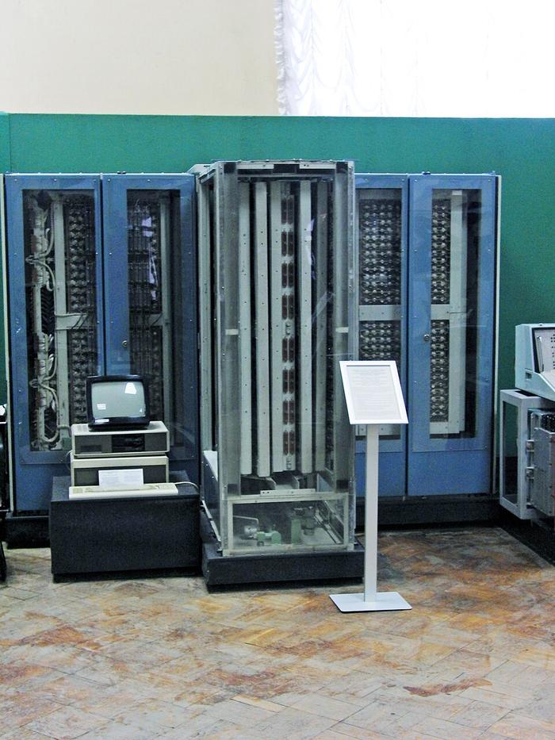
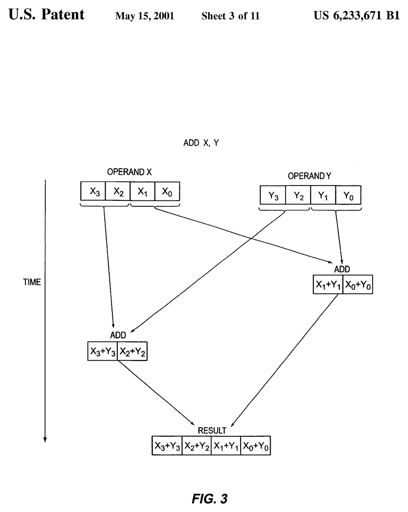
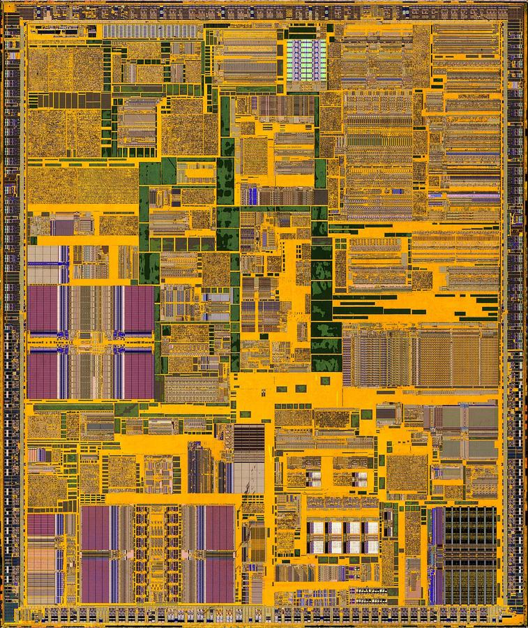

Из «Эльбруса» в Pentium III
Читается подряд. Нажми на удар — откроется подробный разбор с источниками.
В 1970 году выпускник Физтеха Владимир Пентковский пришёл в Институт точной механики и вычислительной техники — туда, где строили «Эльбрусы».Узнать подробнееСвернуть
Он родился в 1946 году и окончил факультет радиотехники и кибернетики МФТИ. В ИТМиВТ Пентковский участвовал в разработке суперкомпьютеров «Эльбрус-1» и «Эльбрус-2» и в создании языка программирования высокого уровня Эль-76.
Источник: программа мегагрантов Минобрнауки, «Пентковский Владимир Мстиславович» (megagrant.ru).
«Эльбрус-1» появился в 1978 году, «Эльбрус-2» — в 1984-м; сложные команды Эль-76 машина сама разбирала на простые микрооперации.Узнать подробнееСвернуть

Стойки «Эльбруса» в Политехническом музее, Москва. Фото: Михаил Щербаков, 2010, Викисклад, CC BY-SA 2.0. Американский эксперт по микропроцессорам Кит Дифендорф писал, что «Эльбрус» в 1978 году был процессором, выдающим две команды за такт, с исполнением вне очереди, переименованием регистров и исполнением по предположению. Главный архитектор «Эльбрусов» Борис Бабаян называл «Эльбрус-1» первым в мире суперскалярным компьютером. Это их оценки; музей их здесь не проверяет и первенство на них не строит.
Источник: The Register, А. Фаткуллин, «Intel uses Russia military technologies», 7 июня 1999 (цитаты К. Дифендорфа и Б. А. Бабаяна).
В 1986 году Пентковский возглавил разработку 32-разрядного микропроцессора Эль-90 для «Эльбруса-3».Узнать подробнееСвернуть
Техническое задание составили в 1987 году, первые образцы Эль-90 построили в 1990-м. В нём соединились идеи RISC и «Эльбруса-2»: около полумиллиона транзисторов, упрощённый набор команд, большинство которых исполнялось за такт. Две команды за такт, исполнение вне очереди и по предположению, предсказание переходов, переименование регистров и конвейерный блок плавающей точки.
Источники: The Register, «Intel uses Russia military technologies» (1999); программа мегагрантов, «Пентковский Владимир Мстиславович».
В 1990 году он взялся за преемника — Эль-91С, но из-за политических и экономических перемен в России финансирование прекратилось.Узнать подробнееСвернуть
«Из-за политических и экономических перемен в России финансирование прекратилось», — так в 1999 году The Register описал судьбу Эль-91С.
Источник: The Register, «Intel uses Russia military technologies» (1999).
С 1993 года Пентковский работал в Intel.Узнать подробнееСвернуть
В 1999 году журнал Intel подписывает его главным инженером (Principal Engineer) группы микропроцессоров в Фолсоме, Калифорния. Учёные степени он привёз из России: кандидат и доктор наук. В Intel он участвовал в разработке нескольких поколений процессоров.
Источники: программа мегагрантов, «Пентковский Владимир Мстиславович»; Intel Technology Journal, Q2 1999, сведения об авторах.
Первый Pentium Intel выпустила 22 марта 1993 года, и имя ему дали сотрудники Intel на конкурсе, а не в честь русского инженера.Узнать подробнееСвернуть
Intel пришлось искать слово вместо «586»: в марте 1991 года суд решил, что номера вроде «386» и «486» нельзя защитить как товарный знак. Компания устроила конкурс среди сотрудников. Слова «Pentium» не предложил никто, но восемнадцать человек прислали варианты от греческого «пента» — «пять»: это пятое поколение x86. Легенда о том, что Pentium назван по фамилии Пентковского, документами не подтверждается: даже The Register в 1999 году писал лишь, что русский конструктор «мог бы» вдохновить это имя.
Источники: Intel, «The Birth of Pentium» (хроника компании, 22 марта 1993); The Register, «Intel uses Russia military technologies» (1999), подзаголовок.
К концу 1990-х компьютерам досталась новая работа: трёхмерная графика, видео, распознавание речи. Везде одно и то же действие над тысячами чисел подряд.Узнать подробнееСвернуть
Вершина трёхмерной сцены записывается четырьмя числами — x, y, z и w. Чтобы повернуть сцену, каждую вершину умножают на одну и ту же матрицу преобразования. Алгоритмы таких программ «по природе параллельны»: одну последовательность действий можно одновременно применить ко многим числам. Ответ на это — SIMD, «одна команда — много данных».
Источник: J. Keshava, V. Pentkovski, «Pentium III Processor Implementation Tradeoffs», Intel Technology Journal, Q2 1999.
Pentium III получил новый набор команд — Internet SSE: 70 команд, и главные из них считают сразу четыре числа.Узнать подробнееСвернуть
Одна команда SSE складывает или умножает четыре числа одинарной точности. Для них процессору добавили новые 128-битные регистры и отдельный регистр управления. По словам авторов, это второе крупное расширение набора команд x86 со времён 80386 и первое, которое добавило новое архитектурное состояние. Пентковский был одним из архитекторов основной группы, которая определила этот набор.
Источники: Intel Technology Journal, Q2 1999, «Pentium III Processor Implementation Tradeoffs» и сведения об авторах; программа мегагрантов, «Пентковский Владимир Мстиславович».
Pentium III выполнял 128-битную команду SSE двумя половинами на одних и тех же блоках, и среди четырёх авторов патента на этот приём стоит Пентковский.Узнать подробнееСвернуть

Фиг. 3 патента США 6 233 671: команда ADD X, Y исполняется «со сдвигом» — сначала младшая половина, потом старшая, на той же схеме. Лист 3 из 11, выдан 15 мая 2001. Общественное достояние (документ правительства США). Находка дняЗаявку «Staggering execution of an instruction by dividing a full-width macro instruction into at least two partial-width micro instructions» Intel подала 31 марта 1998 года; авторы — Мохаммад Абдалла, Джеймс Коук, Стив Фишер и Владимир Пентковский. Патент объясняет, зачем это нужно: если ставить четыре сложителя и четыре умножителя на полную ширину, то, пока работают одни, другие простаивают. Половинные блоки, через которые числа проходят дважды, загружены плотнее. В статье о Pentium III это записано одной фразой: декодер переводит 128-битную команду в пару 64-битных микроопераций.
Источники: патент US 6 233 671 B1 (заявка 31.03.1998, выдан 15.05.2001), Google Patents; Intel Technology Journal, Q2 1999, «Pentium III Processor Implementation Tradeoffs».
Сложитель и умножитель развели по разным портам, чтобы они работали одновременно, — и Pentium III на 550 МГц выдавал до 2,2 миллиарда операций с плавающей точкой в секунду.Узнать подробнееСвернуть

Кристалл Pentium III (Katmai, 250 нм) под микроскопом, верхние слои стравлены до поликремния. Фото: Fritzchens Fritz, 2017, Викисклад, CC0. Новый умножитель на порту 0 переделали из старого, и он выдавал два числа за такт (у старого блока x87 — одно число за два такта). Новый сложитель поставили на порт 1. «По сути, мы назначили разные блоки (а значит, и разные команды) на порты 0 и 1, чтобы обеспечить полное пиковое исполнение на четыре числа», — пишут Кешава и Пентковский. Отдельный блок перестановок помогал быстро переложить данные из вида «x, y, z, w» в вид «все x, все y…».
Источник: Intel Technology Journal, Q2 1999, «Pentium III Processor Implementation Tradeoffs».
Весь набор SSE добавил к кристаллу около 10 % площади — такой бюджет ставили с самого начала.Узнать подробнееСвернуть
Цели разработки — уложиться примерно в 10 % прибавки к размеру Pentium II и при этом поднять частоту хотя бы на ступень. Именно поэтому 128-битные команды пустили по старому 64-битному тракту: переделки свелись к декодеру и блокам исполнения. Об авторе этой работы журнал Intel пишет: «Владимир руководил разработкой архитектуры процессора Pentium III и анализом его производительности». А до того он руководил разработкой компиляторов и поддержки языков программирования для многопроцессорных «Эльбрусов».
Источники: Intel Technology Journal, Q2 1999, «Pentium III Processor Implementation Tradeoffs» и «Architecture of a 3D Software Stack for Peak Pentium III Processor Performance», сведения об авторах.
В 2010 году у Пентковского появилась работа и в России: по мегагранту в МФТИ открылась его лаборатория суперкомпьютерных технологий.Узнать подробнееСвернуть
Лабораторию суперкомпьютерных технологий для биомедицины, фармакологии и малоразмерных структур создали 1 декабря 2010 года, и возглавил её Пентковский. Умер Владимир Мстиславович Пентковский 24 декабря 2012 года в Фолсоме.
Источник: программа мегагрантов Минобрнауки, «Пентковский Владимир Мстиславович».